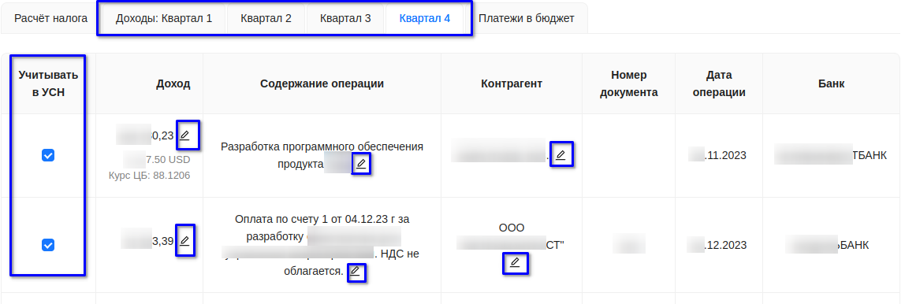
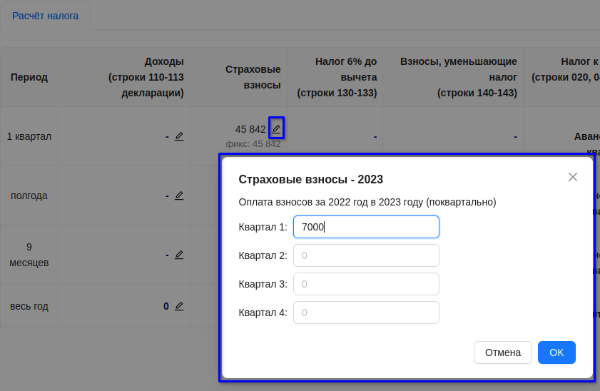
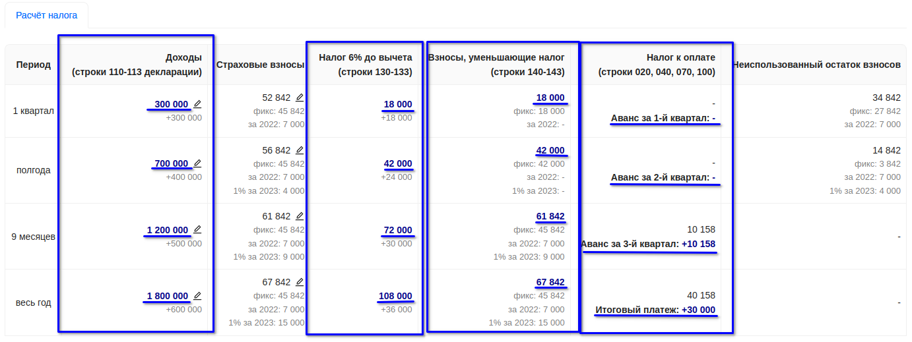
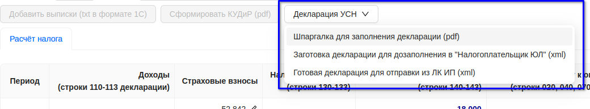
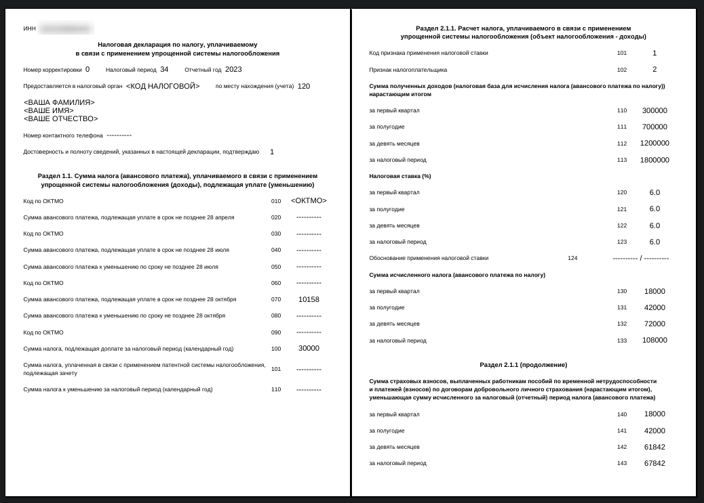

Обратите внимание, что ваши данные никогда и никуда не передаются!
Калькулятор работает в вашем браузере полностью локально - это можно проконтролировать в "Инструментах разработчика" или просто отключив интернет.
Дату начала действия УСН нужно указать, если она попадает в интересующий год расчета. Например, год расчета указан 2023 и ИП на УСН открыли в 2023 году.
Аналогично для даты окончания действия УСН. Например, ИП закрылось в 2023 году.
Файлы банковских выписок должны быть предварительно выгружены из web-клиента вашего банка (или банков) в формате 1С за интересующий период (например, с 01.01.2023 по 31.12.2023). Некоторые банки позволяют выгрузить один файл сразу по всем расчетным счетам, другие - по одному файлу на каждый расчетный счет. При добавлении выписок в Калькулятор можно выделить сразу несколько файлов, а не добавлять по одному файлу.
Поддерживаются выписки как по рублевым счетам, так и валютным. По валютным счетам нужно добавлять выписки как по основному счету, так и по транзитному.
Так как Калькулятор не сохраняет нигде добавленные выписки, то в следующий раз при работе с Калькулятором файлы выписок нужно будет добавить заново.
После загрузки операций можно исключить ненужные операции из расчета для УСН, уточнить доход по операции, скорректировать содержание операции или наименование контрагента.
При необходимости укажите суммы страховых взносов, которые могут быть использованы для уменьшения налога в расчетном периоде.
Например, для 2023 года можно указать уплаченные в 2023 годы взносы за 2022 год.
Синим шрифтом выделены значения, которые можно использовать для заполнения декларации или отправки уведомлений по налоговым авансам (колонка "Налог к оплате").
Можно посмотреть как шпаргалку по ручному заполнению декларации, так и скачать xml-файлы для дозаполнения в программе "Налогоплательшик ЮЛ" или непосредственной отправки из личного кабинета ИП.
Пример шпаргалки:
КУДиР можно сформировать по операциям, загруженным из банковских выписок. При ручном вводе доходов формирование КУДиР недоступно.